2.2.6. Lab – Creating an APM Policy - CAC Authentication¶
2.2.6.1. Task – Build CAC AUTH Macro¶
Click the Add New Macro button

Give the macro a name and click save
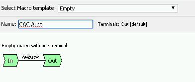
Open the newly created macro by clicking the plus sign by the name: CAC Auth
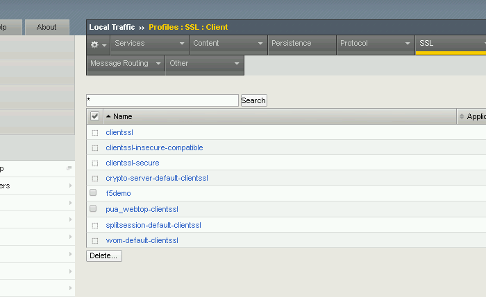
Click the Authentication tab across the top, select On-Demand Cert Auth, and click Add Item
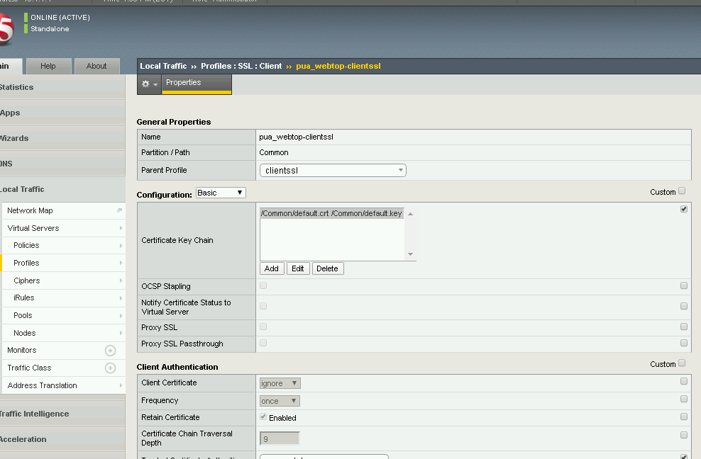
Leave the Auth mode set to the default Request, and click save

Click the plus sign beside the Successful branch
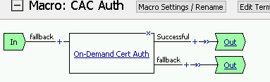
Click the tab Macros across the top, select the GET UPN from CAC button in the main page, and click Add Item
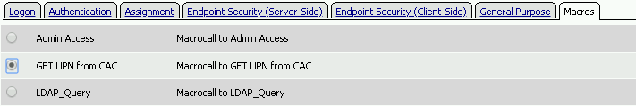
Click the plus sign on the found branch

Select Macros across the top, select the LDAP_Query button in the main page, and click Add Item
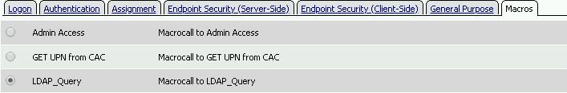
Click the plus sign on the fallback branch after the On-Demand Cert Auth
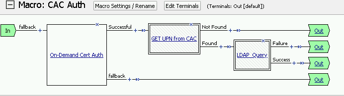
Click the tabl General Purpose across the top, select Message Box in the main page, and click Add Item
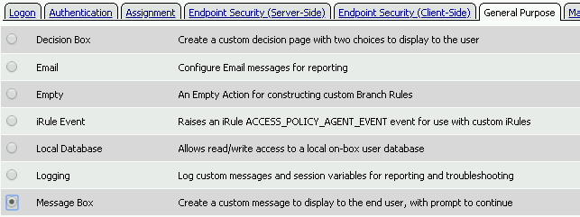
Provide a name for the message box, enter message, and click save
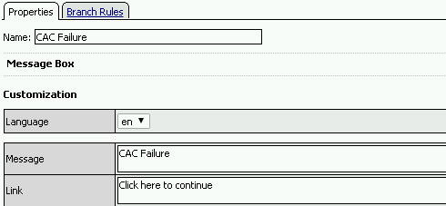
Click Edit Terminals
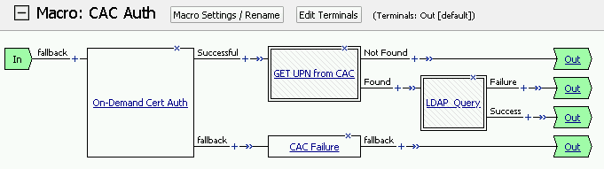
Change the default name from Out to Success, and click Add Terminal
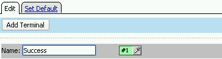
Change the default name to Failure
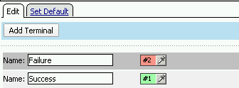
Click the down arrow beside the Failure box to change the order. The Success terminal should be on top. Click Save
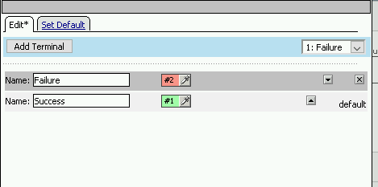
Click the terminals on the Not Found, Failure, Fallback branches and change them from Success to Failure. Remember to click Save!
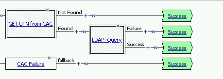
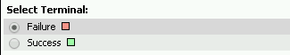
Note
The completed CAC Auth Macro